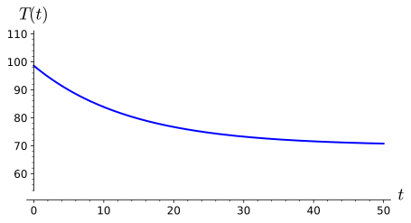

where \(F\) is a function of \(n + 2\) variables, and to understand that a solution to the equation on an interval \(I = (a, b)\) is a function \(u = u(t)\) such that the first \(n\) derivatives of \(u\) are defined on \(I\text{,}\) and
\begin{equation*}
F(t, u, u', u'', \ldots, u^{(n)}) = 0.
\end{equation*}
To understand that a first-order differential equation is an equation that can be written in the form
where \(F\) is a function of \(n + 2\) variables. A solution to this equation on an interval \(I = (a, b)\) is a function \(u = u(t)\) such that the first \(n\) derivatives of \(u\) are defined on \(I\text{,}\) and
\begin{equation*}
F(t, u, u', u'', \ldots, u^{(n)}) = 0.
\end{equation*}
We will concentrate on first-order differential equations in this chapter. That is, we will consider equations of the form
In general, we cannot generally find such a formula for an arbitrary first-order differential equation. We can, however, solve a differential equation \(y' = f(x, y)\) if we can write the equation in the form
Such equations are called separable. We can solve separable equations by integrating the first term with respect to \(x\) and the second term with respect to \(y\text{.}\)
where \(C\) is an arbitrary constant. Using the initial condition, \(y(0) = 1\) to find \(C\text{,}\) we see that
\begin{equation*}
0 = \ln|1| = 0 + C.
\end{equation*}
Thus, the solution to our initial value problem can be given implicitly by \(\ln y = x^2/2\text{.}\) In this example, we can actually write down an explicit solution that is defined everywhere,
\begin{equation*}
y = e^{x^2/2}.
\end{equation*}
The Sage commands for solving our initial value problem are below.
If we ask Sage to solve a differential equation that it cannot solve analytically, the computation will return an error. Sage will not solve the initial value problem
Notice that the solution does not make sense for all values of \(t\text{.}\) In fact, the solution is only defined on the interval \(-1 \lt t \lt 1\text{,}\) if we require that our solution be continuous. Let us see what Sage has to say.
Sage does return a solution even if it looks a bit different than the one that we arrived at above. Notice that we have an imaginary term in our solution, where \(i^2 = -1\text{.}\) We will examine the role of complex numbers and how useful they are in the study of ordinary differential equations in a later chapter, but for the moment complex numbers will just muddy the situation.
Since \(C\) is an arbitrary constant, we know that \(e^C\) is an arbitrary positive constant, which we will also call \(C\text{.}\) So we can rewrite this last equation as
Solve each of the following differential equations using the separation of variables technique.
(a)
\(dy/dx = y/x\)
(b)
\((x^2 + 1)y' = xy\)
(c)
\(dx/dt = e^x \sqrt{t}\)
(d)
\(\dfrac{dx}{dt} = \dfrac{\sec^2 t + 2t}{2x}\text{,}\)\(x(0) = -2\)
(e)
\(dy/dx = \sqrt{xy}\text{,}\)\(y(1) = 3\)
Subsection1.2.2Newton's Law of Cooling
Separable equations arise in a wide range of application problems. One does not have to watch too many crime dramas to realize that the time of death of a murder victim is an important question in many criminal investigations. How does a forensic scientist or a medical examiner determine the time of death? Human beings have a temperature of \(98.6^\circ\)F. If the surrounding temperature is cooler, then the body will cool down after death. Eventually, the temperature of the body will match the temperature of the environment. We should not expect the body to cool at a constant rate either. Think of how a hot cup of coffee or tea cools. The liquid will cool quite quickly during the first few minutes but will remain relatively warm for quite a long period.
The answer to our forensic question can be found by using Newton's law of cooling, which tells us that the rate of change of the temperature of an object is proportional to the difference between the temperature of the object and the temperature of the surrounding medium. Newton's law of cooling can be easily stated as a differential equation,
where \(T\) is the temperature of the object, \(T_m\) is the temperature of the surrounding medium, and \(k\) is the proportionality constant.
Suppose that the temperature of the surrounding environment is \(70^\circ\)F, and we know from experience that a body under these conditions cools off approximately \(2^\circ\)F during the first hour after death. In order to determine a formula for the time of death, we must solve the initial value problem
we see that this equation is separable. Integrating both sides of the last equation, we obtain \(\ln | T - 70| = kt + C\text{.}\) Since we are assuming that \(T \gt 70\text{,}\) we can write \(T - 70\) instead of \(|T - 70|\text{.}\) Thus, we have
The graph of the \(T\) seems appropriate to our model (Figure 1.2.4).

Figure1.2.4.Newton's law of cooling
Let us solve our differential equation using Sage.
We can use Sage to plot our solution.
Activity1.2.2.Coffee Temperature.
The brewing temperature of the water used is very important. It should be between \(195^\circ\)F and \(205^\circ\)F. The closer to \(205^\circ\)F the better. Boiling water (\(212^\circ\)F) should never be used, as it will burn the coffee. Water that is less than \(195^\circ\)F will not extract properly. On the other hand, coffee that has a temperature of \(205^\circ\)F is too hot to drink. 1 Coffee is best when it is served at a temperature of \(140^\circ\)F to \(155^\circ\)F (the Goldilocks range).
(a)
Suppose coffee is initially brewed at \(205^\circ\)F. If room temperature is \(70^\circ\)F, set up an initial value problem to model the temperature of the coffee at time \(t\text{,}\) where \(t\) is the time in minutes after brewing has finished.
If the temperature of the coffee drops from \(205^\circ\)F to \(200^\circ\)F in the first two minutes after brewing, how long before the coffee reaches a temperature of \(155^\circ\)F?
Subsection1.2.3Mixing Problems
There is a large class of problems in modeling known as mixing problems. These problems refer to situations where two or more substances are mixed together in a container or containers. For example, we might wish to model how chemicals are mixed together in a refinery, how pollutants are mixed together in a pond or a lake, how ingredients are mixed together when brewing beer, or even how various greenhouse gases mix together across different layers of the atmosphere.
Suppose that we have a large tank containing 1000 gallons of pure water and that water containing 0.5 pounds of salt per gallon flows into the tank at a rate of 10 gallons per minute. If the tank is also draining at a rate of 10 gallons per minute, the water level in the tank will remain constant. We will assume that the water in the tank is constantly stirred so that the mixture of salt and water is uniform in the tank.
We can model the amount of salt in the tank using differential equations. If \(x(t)\) is the amount of salt in the tank at time \(t\text{,}\) then the rate at which the salt is changing in the tank is the difference between the rate at which salt is flowing into the tank and the rate at which it is leaving the tank, or
Of course, the salt flows into the tank at the rate of \(10 \cdot 0.5 = 5\) pounds of salt per minute. However, the rate at which the salt leaves the tank depends on \(x(t)\text{,}\) the amount salt in the tank at time \(t\text{.}\) At time \(t\text{,}\) there is \(x(t)/1000\) pounds of salt in one gallon. Therefore, salt flows out of the tank at a rate of \(10x(t)/1000 = x(t)/100\) pounds per minute. Equation (1.2.2) now becomes
models the amount of salt in the tank at time \(t\text{.}\) Notice that \(x(t)\to 500\) as \(t \to \infty\text{,}\) as expected.
Activity1.2.3.A Brewery Problem.
The vast majority of beers from around the world have alcohol contents of 4 to 6 percent alcohol by volume (for example, Heineken Lager Beer has a 5 percent alcohol content). Suppose a local brewery has produced two beers with different alcohol contents, one 4 percent and one 7 percent. The master brewer would like to add some of the 7 percent beer to the 4 percent beer to obtain a beer with 5 percent alcohol.
(a)
A vat contains 500 gallons of 4% alcohol (by volume). Beer with 7% alcohol is pumped into the tank at a rate of 5 gallons per minute. Beer is also pumped out of the vat at a rate of 5 gallons per minute, so there is always 500 gallons in the tank. Set up an initial value problem to model the percentage of alcohol in the vat at time \(t\text{,}\) where \(t\) is the elapsed time in minutes.
What is the percentage of alcohol in the vat after one hour?
(d)
At what time will the beer reach 5% alcohol?
Subsection1.2.4A Retirement Model
Differential equations have many applications in economics and finance. For example, Dr. J., a college professor, wisely started saving for his retirement as soon as he entered the workforce, and he now has $500,000 in a retirement account earning an interest of 5% compounded continuously. The initial value problem,
provides a nice model of Dr. J.'s investment, where \(P(t)\) is the amount in thousands of dollars in the fund at time \(t\text{.}\) The solution to our initial value problem is
If Dr. J. plans to retire in 10 years, he can expect a nest egg of \(P(10) \approx 824.360635350064\) or about $824,360.
Of course, Dr. J. still plans to make contributions to his retirement fund during his next ten years of employment. His annual contribution will be $5,000, which his employer will generously match. If we assume that these contributions will spread out evenly over the course of the year, we can incorporate this information into our original initial value problem,
Dr. J.'s nest egg is now \(P(10) \approx 954.104889490090\) or about $954,105.
Once Dr. J. retires, he will need to begin withdrawing money from his account. He estimates that he will need to withdraw $60,000 a year for living expenses if he wishes to travel and enjoy his golden years. Of course, whatever remains in his account at any given time will still collect interest. We describe J.'s retirement situation with the initial value problem,
\begin{align*}
\frac{dP}{dt} \amp = \begin{cases} 0.05 P + 10, \amp t \leq 10 \\ 0.05 P - 60, \amp t \gt 10 \end{cases}\\
P(0) \amp = 500.
\end{align*}
Hence, the rate of withdrawal exceeds the rate at which Dr. J.'s account is earning interest. Eventually, Dr. J.'s retirement fund will disappear. This may pose a problem, if Dr. J. plans to retire early and live a long life.
Again, the differential equation \(dP/dt = 0.05 P - 60\) is separable, and we have
\begin{equation*}
t = 20 \ln\left( \frac{1200}{149.21} \right) \approx 41.7.
\end{equation*}
This means that if Dr. J. retires in 10 years at the early age of 55, he can expect his retirement to last into his mid 90s.
Subsection1.2.5Some Theory
We now give a theoretical basis for solving first-order separable differential equations. A differential equation \(y' = F(x, y)\) is called separable if it can be written in the form
We now will prove that such an equation can be solved by integrating the first term with respect to \(x\) and the second term with respect to \(y\text{.}\) If
Another difficulty arises if we consider the equation
\begin{equation*}
y' = t e^{-y^2}.
\end{equation*}
This equation is separable since we can rewrite it in the form
\begin{equation*}
e^{y^2} \, dy = t \, dt.
\end{equation*}
Although the Fundamental Theorem of Calculus guarantees that every continuous function has an antiderivative, we cannot find an antiderivative for the function \(e^{y^2}\) in terms of elementary functions. Thus, we are forced to write our solution as
Even if we have a separable differential equation, we are not guaranteed a unique solution. Consider the initial value problem \(y' = y^{1/3}\) with \(y(0) = 0\) and \(t \geq 0\text{.}\) Separating the variables,
\begin{equation*}
y^{-1/3} \, dy = dt.
\end{equation*}
Thus,
\begin{equation*}
\frac{3}{2} y^{2/3} = t + C
\end{equation*}
or
\begin{equation*}
y = \left( \frac{2}{3} ( t + C)\right)^{3/2}.
\end{equation*}
If \(C = 0\text{,}\) the initial condition is satisfied and
\begin{equation*}
y = \left( \frac{2}{3} t \right)^{3/2}
\end{equation*}
is a solution for \(t \geq 0\text{.}\) However, we can find at least two additional solutions for \(t \geq 0\text{:}\)
\begin{align*}
y & = - \left( \frac{2}{3} t \right)^{3/2},\\
y & \equiv 0.
\end{align*}
In Section 1.5 we will learn sufficient conditions for a first-order initial value problem to have a unique solution.
where \(F\) is a function of \(n + 2\) variables. A solution to the equation on an interval \(I = (a, b)\) is a function \(u = u(t)\) such that the first \(n\) derivatives of \(u\) are defined on \(I\text{,}\) and
\begin{equation*}
F(t, u, u', u'', \ldots, u^{(n)}) = 0.
\end{equation*}
A first-order differential equation is an equation that can be written in the form
Use the fact that this new equation is separable to solve for \(y\text{.}\)
Show that any homogeneous equation \(y' = f(x, y)\) can be transformed into a separable differential equation by making the substitution \(y = vx\text{.}\)
A function \(f\) is said to homogeneous of degree \(n\) if \(f(t x, t y)= t^n f(x, y)\) for \(n = 1, 2, \ldots\text{.}\) Show that differential equation
where \(P\) and \(Q\) are both homogeneous of degree \(n\text{,}\) can be transformed into a separable differential equation using the substitution \(y = vx\text{.}\)
Mr. Ratchett, an elderly American, was found murdered in his train compartment on the Orient Express at 7 AM. When his body was discovered, the famous detective Hercule Poirot noted that Ratchett had a body temperature of 28 degrees. The body had cooled to a temperature of 27 degrees one hour later. If the normal temperature of a human being is 37 degrees and the air temperature in the train is 22 degrees, estimate the time of Ratchett's death using Newton's Law of Cooling.
25.
You are starting a new position, and your employer has a generous retirement plan. If you put $500 a month into a 401(k) plan, your employer will match your contributions.
Assume that you are 25 years old and plan to retire at age 65, how large can you expect your 401(k) pension to be when you retire? Assume that your 401(k) plan will collect interest at a rate of 5%.
If you begin withdrawing $60,000 every year at age 65, how long will your retirement fund last?
Subsection1.2.10Sage—Quick Start Guide to Solving Ordinary Differential Equations
Sage has powerful algorithms for finding exact and numerical solutions of differential equations. In addition, we can plot solutions and direction fields. Although some differential equations have an exact solution and can be solved using analytic techniques with calculus, many differential equations can only be solved using numerical techniques. This should not be too surprising if we consider how we solve polynomials. It is quite easy to find the roots of any equation of the form \(ax^2 + bx + c = 0\) by either factoring or using the quadratic equation, but solving an equation such as
is a much more difficult problem. Unlike the situation for quadratic equations, there does not exist a general formula for solving seventh degree equations. We can even encounter difficulties when using a numerical method such as the Newton-Raphson algorithm.
In general, Sage needs three things to solve a differential equation:
An abstract function
A differential equation
A Sage command to solve the equation.
Suppose we wish to solve the equation
\begin{equation*}
\frac{dy}{dx} = x + y.
\end{equation*}
We can use the following sequence of Sage commands.
The first command defines the abstract function. The second describes the actual differential equation. Finally, we use the Sage command desolve to find the actual solution. Try replacing the h command with show(h) or show(expand(h)).
We can also specify an initial condition for our differential equation, say \(y(0) = 1\text{.}\)